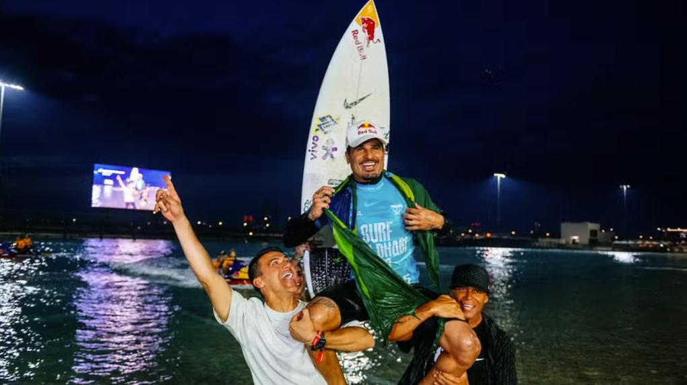

Brasileiro venceu o surfista da Indonésia Rio Waida na final da segunda etapa do Circuito Mundial de Surfe; Cailtin Simmers foi campeã do feminino. Com uma campanha irretocável em Abu Dhabi, Italo Ferreira conquistou pela primeira vez na carreira um título em uma piscina de ondas. Neste domingo, o campeão olímpico e mundial enfrentou o surfista da Indonésia Rio Waida na decisão da segunda etapa do Circuito Mundial de Surfe, nos Emirados Árabes, e derrotou o adversário com um somatório alto de 17.27, combinando 8.67 e 8.60. Com o título, o "brabo" garantiu o primeiro lugar no ranking da WSL. Cailtin Simmers foi campeã do feminino.

O Brasil mostrou mais uma vez ao mundo que é praticamente imbatível em campeonatos nas piscinas de ondas. Italo Ferreira se junta a Gabriel Medina e Filipe Toledo como os únicos brasileiros a serem campeões nesse formato. Todas as finais desde 2018 tiveram presença de brasileiros, que perderam apenas uma vez. Gabriel Medina e Filipinho decidiram o título em três oportunidades; Italo Ferreira foi à última final e agora conquista o título da estreia da etapa em Abu Dhabi.
Italo Ferreira tira 8,60 na segunda onda da final da etapa de Abu Dhabi da WSL 2025
Pela primeira vez na história, o Oriente Médio foi palco de uma etapa da elite do Circuito Mundial de Surfe. Italo Ferreira crava seu nome na história como o vencedor desse evento ao vencer Rio Waida. Logo nas primeiras ondas da bateria, o potiguar mostrou muita confiança. Com manobras fortes de borda, e um toque de progressividade, o potiguar começou a bateria com 8.67 para a direita e 8.60 para a esquerda.